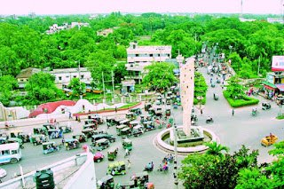
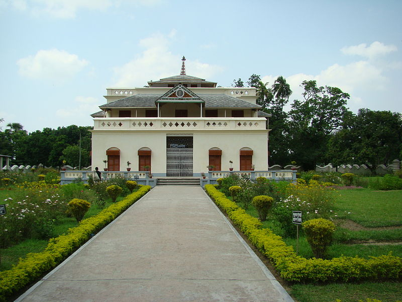

MY FAVORITE PLACE
- KALAM:

- A home is a living place.I have a home which is very dear to me.My home is in a village called KALAM in district of NATORE.This is the home where i was born.it stands in the midst of beauty of nature.A big river flows by the north of my home.Green plants and trees surround the eastern and the western side if it.It consists six separate houses.Fore of them are made of wood & tin sits.Two are made of straw & bamboo. There are many nice and good things in my home.The main house is south facing.It has two main doors & several windows.In font of the main house there is a flower garden with varieties of flowers.The environment of my home is very nice and healthy.To me my home is sweetest and the safest place in the earth.I love it more than anything eals.
- 2.RAJSHAHI:

- Edit
Rajshahi district was a part of the Pundra region of ancient Bengal ruled by the Pundra Kingdom. The capital of Prince Vijaya, the king who led military operations in Sri Lanka and Southeast Asia was located 14 kilometres (9 mi) to the west of Rajshahi town. In medieval times, the region came to be known as "Rampur Boalia". The origin of the present name of "Rajshahi" is debated among scholars. Most say that it takes its name from Hindu Kings and zamindars (or "Rajas") as Raj and the persianised Shahi; both of which mean "royal" or "kingdom".[7] The administrative district was established in 1772 and the municipal corporation in 1876. Rajshahi was dominated by various Maharajas, Rajas and Zamindars.[8]
Rajshahi Railway Station in the 1930s
During the British raj, it was also known as "Beuleah" and was the administrative headquarters of Rajshahi district in Eastern Bengal and Assam. It was originally chosen as a commercial factory for the silk trade, which was being officially encouraged by the agricultural department of that time. The town contained a government college, and an industrial school for sericulture. Most of the public buildings were severely damaged by the earthquake of 12 June 1897.[9] Throughout much of the early part of the twentieth century there was a daily steamer service on the Ganges which connected it to rail-heads that led to the then provincial capital of Calcutta as well as other cities in the province of Bengal.
Pakistani Eastern Command plan for the defence of East Pakistan from 1967 to 1971 (generic representation—some unit locations not shown).
During the Indo-Pakistani War of 1971 for the liberation of Bangladesh, when Pakistan Army created an ad hoc Rajshahi brigade and deployed in September.[10] During the 1971 Bangladesh genocide by the Pakistan, in which Pakistani Army and its supporting militias (Razakar) killed estimated between 300,000[11] to 3,000,000 people and raped 200,000–400,000 Bangladeshi women in a systematic campaign of genocidal rape,[12][13][14] Rajshahi witnessed great atrocities by the Pakistan army in the 1962 Rajshahi massacres of Bangladeshis and heroic struggles by the Bangladeshi freedom fighters. The largest mass grave in Bangladesh is located in University of Rajshahi, which was used as an army camp during the war.[citation needed] On the other hand, one of the great battles of the war took place near Rajshahi. Captain Mohiuddin Jahangir, who died in battle, was awarded the highest honour (Bir Shrestho) by the Bangladesh government after the war.[citation needed] Pakistan Army's 93,000 troops unconditionally surrendered to the Indian Army and India's local ally Mukti Bahini on 16 December 1971.[15] This day and event is commemorated as the Bijoy Dibos (Bengali: বিজয় দিবস) in Bangladesh and Vijay Diwas in India.[16][15]
Rajshahi was made a city corporation in 1991.
- 3.SHELAIDAHA KUTHI BARI:

habsnzjbxndjav